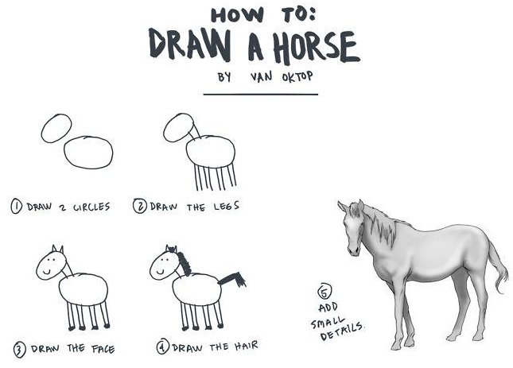
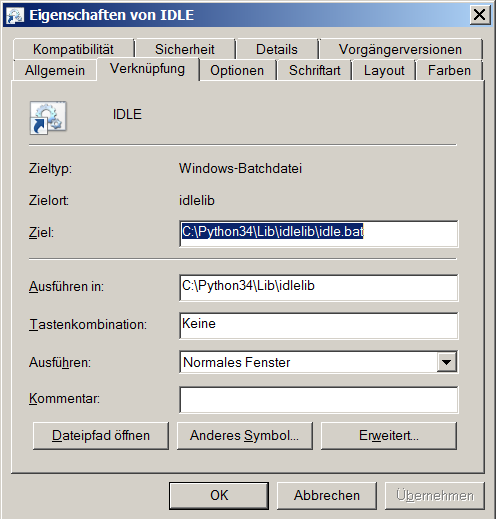
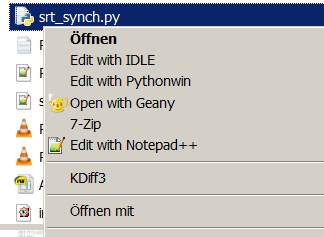

PyWS01 - Introduction¶
Day One
About this Workshop¶
It might get a bit philosophical here
The materials presented during this workshop are available online. Start here: http://hans-boden.github.io
Learning to Draw¶
Let’s assume we want to learn how to draw like an artist.
This is what we can expect from a drawing workshop:
{kind=link}
Most introductions, tutorials and workshops end after step 4.
An artist will need much more exercise, than what is possible in a 30-hours workshop. And that is what we will have to do: lern more and get practice. What a real artist does, is not to go the easy way. He/she will learn more about the objects to draw. Anatomy studies are just one important example or to learn about perspective and light.
This is where I want to go with you: beyond the usual ways, that are offered by many online tutorials and introductions: We will learn some of the details of the python language, which will help to understand whats really happening and to avoid many common difficulties and mistakes. We will not get to the step 5, but we will try to go into the right direction.
Learning a new language¶
Python is a language. After installing Python on our computer, our computer can understand this language. Python is a language, which is used to give instructions to the computer. The computer tries to understand what we tell him and perform the right action.
The Python program is an interpreter of the Python language. It interprets what it can understand and tranlates it into actions, which are performed by the computer.
We programmers are interpreters, too. We try to understand a problem or a task from the real world, find a solution for it and then translate the solution into a programming language. And this translation depends on our knowledge of the target language. And not only the translation step is important. Thinking of possible solutions is already heavily determined by our knowledge of the target language.
“Language shapes the ways we think”
(google that!). If we master a rich language like Python, we will find it much easier to find solutions for computational problems. This is, why the choice of a programming language matters.
So now, as we start to learn a new language, we will experience the same difficulties like with learning any other language : It appears tedious and boring. What I can express is not interesting, and what I find interesting is out of my reach.
Learning a programming language¶
A language consists of a vocabluary and a grammar. The grammar of a programming language is called syntax. Its the rules, how the words of the language can be combined to give meaningful statements.
There are a number of reserved words, which define the backbone of the language, words like if else true false while finally def(ine) return. We can not use them for other purposes.
There are nouns (objects = things that exist) and verbs (functions = actions). And there are words, sentences (statements), chapters (modules), books (packages) and libraries. Ok, I start to overstretch the analogies here ;-)
Very few recommendations:¶
- Type your Python code, don’t copy&paste
- Know your tools (editor, explorer, keyboard, ...)
- Don’t guess, know. To know (to learn) you must read, try out and ask.
Learning Resources¶
Not every detail of Python can be explored in this workshop. There are a lot of smart people in the Python universe, which did a very good job and documented Python features for beginners and intermediate learners. Also they may explain the facts of life in a better language and with better examples, than this workshop does. Here is a list of highly recommended internet resource to learn and improve on Python.
A number of recommended sites:
- http://thepythonguru.com/ - This is good for starters.
- https://www.stavros.io/tutorials/python/ - if you feel smart enough, try this site. The ‘10 minutes’ promise does of course not hold.
- http://www.python-course.eu/index.php - A site maintained by some German guys - perhaps this is why I like it. Its a bit slow, but very good to understand.
- http://docs.python-guide.org/en/latest/intro/learning/ - This is the ultimate guide, which goes beyond the core of Python - A site to come back again and again.
- https://www.gitbook.com/book/swaroopch/byte-of-python/ - Python explained by a lot of examples, easy to read, but unusual in the sequence of subjects.
- http://www.bogotobogo.com/python/pytut.php - the newest entry on this list. I like it, because is explains nicely some of the more complicated features of Python.
And of course:
- The original Python documentation, specially the tutorial and the library reference.
Preparations for the workshop¶
Some Remarks¶
The tutor has no experiences with the Mac platform and only limited experiences with Linux. If you use Mac or Linux, you probably need to get help from neigbors, friends or the internet. When the following documentation refers to Windows, Mac- and Linux-users must assume their equivalent methods and tools.
Cooperative learning / Working in pairs¶
While doing exercises or solving prooblems, questions will arise. I am of course prepared to give all necessary support. Please interrupt me at any point. But I would also encourage all of you, to actively support each other.
I also would recommend, that you all form groups of two. Pair-Programming is a style of working, where one participant types at the keyboard, while the other looks over his/her shoulder, reads and thinks. The roles should be exchanged frequently. Four eyes see more than two, and talking about a problem is often a big step towards a solution. Let us give it a try.
Install Python¶
if not done before
We need Python Version 3 (anything above Python 3.3). Python can be downloaded from the Python homepage: http://www.python.org
When installing, it should be made sure, that the executable python module is included in the command path. To test this after the installation, open a command terminal and type python --version, to see if the python command is recognized. If not, it should be added manually to the PATH environment variable.
Create a python project folder¶
We will work on a number of small projects and we must have a place to save code- and text files. So we should create a folder like pyws_2016q4 or similar, where all workshop related stuff will be stored.
Which separate Tools are required for this Workshop?¶
The short answer is None. We will use the IDLE, which is a simple development tool, which is included in Python. There are many editors and developement environments, which can be used to write and test Python programs. For this workshop we will use the tool, which is included in the Python installation package: IDLE. Everybody may choose a different tool, but they are usually more complex and offer no advantage for the simple tasks of this workshop.
This response true for this workshop, but for any larger project, there are many recommendations to use some tools. Unfortunately the recommendations, which can be found in the internet, point to many different tools. I will not add more to these recommendations, only give a hint about what I use:
- For many small projects I use the Python IDLE
- For a few big projects I use PyCharm. It is powerful (=complex) piece of software, that covers all needs
- I use Notepad++ whenever I need to edit text, which is not Python code
The none answer is not 100% true, because I recommend to use GIT to make a local copy of the online repository of this Workshop. This is however optional. The usage of GIT will be covered later.
Starting with the IDLE¶
The IDLE can be start with an icon or from the explorer context menu. The IDLE icon on my computer has these properties:
{kind=link}
On your computer it is different.
If you have a python file, you can right-click to get the context menu:
The IDLE has two windows: The console window and the editor window. For the first steps with python we use the console window. This works almost exact like the Python console on the Windows Command line.